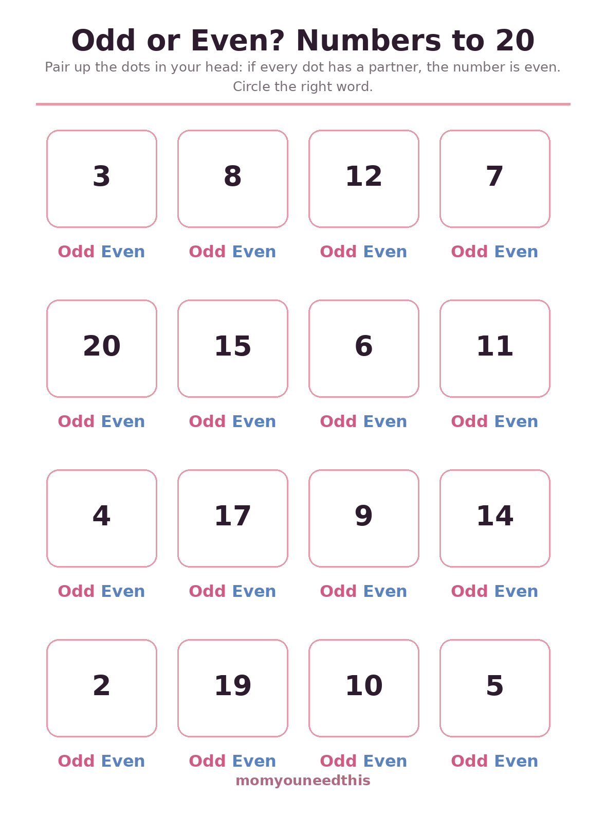
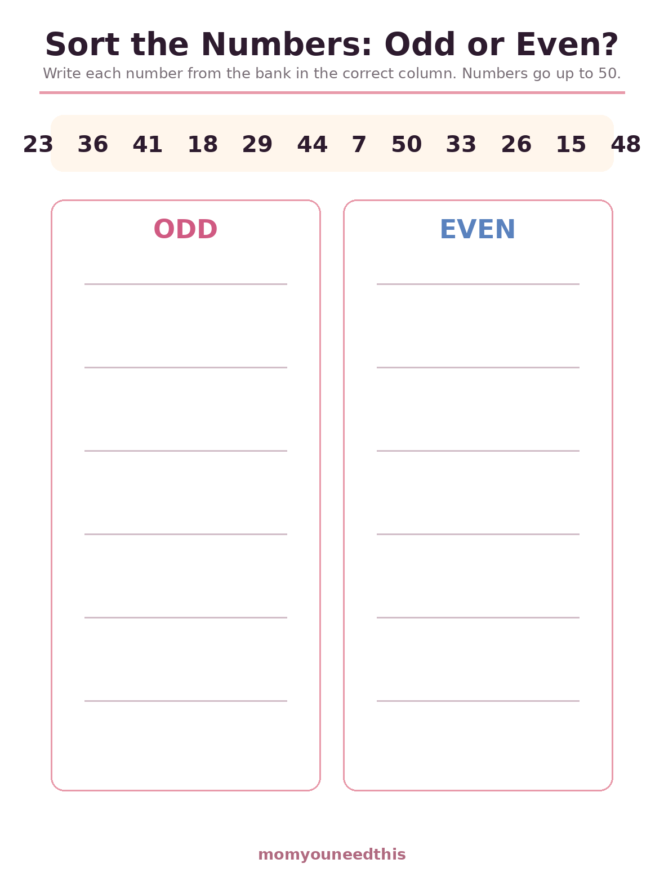
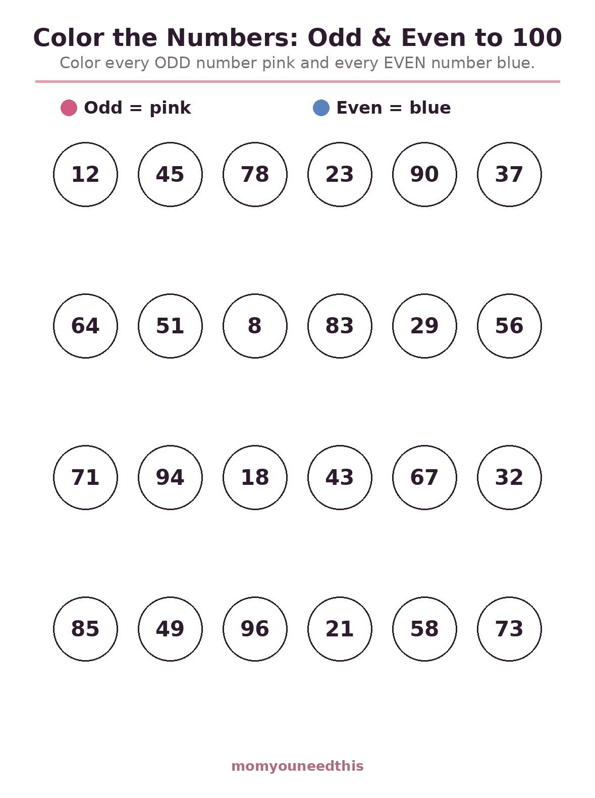

Odd and Even Numbers Worksheets The Partner Test, Sorting Practice & Coloring to 100
Free odd and even numbers worksheets for ages 5 to 7 built on one simple idea: if every dot finds a partner, the number is even. Your child circles odd or even to 20, sorts numbers to 50 into the right column, then colors numbers to 100 by the odd-even key. Print at home, no signup.
Last updated: October 21, 2026
Quick Answer
These free odd and even worksheets give children three printable sheets: circling odd or even for numbers to 20, sorting a bank of numbers to 50 into odd and even columns, and a coloring sheet that uses the odd-even key on numbers to 100. They teach the pairing idea behind the rule, then the last-digit shortcut. Made for ages 5 to 7.
At a Glance
- Skill: Odd and even numbers
- Ages: 5–7 (grades 1–2)
- Sheets: 3 (circle it, sort it, color it)
- Numbers: To 20, to 50, and to 100
- Method: The partner test first, last-digit shortcut second
- Cost: Free — print at home
👟 Odd or Even? Numbers to 20
Sixteen numbers, each with a choice to circle. Before circling, your child runs the partner test in their head: can this many dots pair up with none left over? At this size the counting is honest and quick, and the left-over-one feeling of odd numbers becomes physical, not abstract.

👟 Download Your Free Odd or Even Worksheet
16 numbers to 20 — circle Odd or Even for each one.
⬇️ Download Free Worksheet 🖨️ Print🎁 Free printable for ages 5–7
🗂️ Sort the Numbers
Twelve numbers up to 50 wait in the bank at the top; your child's job is to write each one into the odd or the even column. Sorting forces a decision on every number — no hiding in a pattern — and bigger numbers quietly teach the shortcut: nobody pairs up 48 dots, so the last digit starts doing the work.

🗂️ Download Your Free Sorting Worksheet
12 numbers to 50 to sort into the Odd and Even columns.
⬇️ Download Free Worksheet 🖨️ Print🎁 Free printable for ages 5–7
🎨 Color the Numbers to 100
The reward sheet: twenty-four numbered circles up to 100, colored pink for odd and blue for even. By the end a pattern shows itself — the colors alternate in a rhythm down the page, and your child has used the last-digit rule two dozen times without a single drill.

🎨 Download Your Free Coloring Worksheet
24 numbers to 100 — color the odds pink and the evens blue.
⬇️ Download Free Worksheet 🖨️ Print🎁 Free printable for ages 5–7
🌱 The Partner Test Comes First
Odd and even is a child's first real classification rule, and it deserves a reason, not just a rhyme. The partner test — pair things up and see if one is left over — is a reason a 5-year-old can hold. Every later shortcut (last digit, the 2 times table's rhythm) hangs on that one picture. Sheets here start with deciding small numbers honestly, then let the shortcut emerge from the bigger ones on its own.
🖨️ How to Use These Worksheets
- Start with real pairs. Shoes, mittens, toy animals: count a small pile, pair them up, and name the leftover. Then open the first sheet.
- Say the test out loud. "Does everyone have a partner?" before circling makes the idea do the work, not guessing.
- Let the shortcut arrive. On the sorting sheet, when your child stops counting and starts glancing at last digits, name what they discovered — that is the lesson landing.
- Finish with the coloring sheet. It is practice in disguise, and the alternating pattern at the end is worth pointing at together.
🔢 More Math for Moms & Kids
✖️ Multiplication Worksheets
The 2 times table is the even numbers in disguise. Start multiplication.
📝 Addition Worksheets
Plain addition practice — sums to 5, 10 and 20. Keep adding.
📖 Math Word Problems
Stories where odd and even show up in real life. Try word problems.
🧮 Older Kids
Every worksheet in the Older Kids section, in one hub. Browse Older Kids.
❓ Odd and Even Numbers FAQ
What are odd and even numbers?
Even numbers split into two equal groups with nothing left over — they end in 0, 2, 4, 6 or 8. Odd numbers always have one left over, and end in 1, 3, 5, 7 or 9. The pairing test on these worksheets shows children why, not just which.
What age are odd and even worksheets for?
Odd and even is usually taught in grades 1 and 2, around ages 6 and 7, once a child can count to 100 and is starting to skip count by 2s. The first sheet here stays within 20, so a confident 5-year-old can start it.
How do I explain odd and even to my child?
Give them pairs of shoes, socks or toy animals. If everything finds a partner, the number is even; if one is left standing alone, it is odd. That partner test is the whole idea — these sheets build on it, and the last digit trick comes after.
Why does the last digit decide?
Because tens are always even — ten pairs up perfectly, and so does any number of tens. Only the ones digit can leave a leftover, so only it matters. Children who understand the pairing reason trust the shortcut; children who only memorize it forget it.
Are these odd and even worksheets free?
Yes — all three worksheets are free to print at home, with no signup and no email.